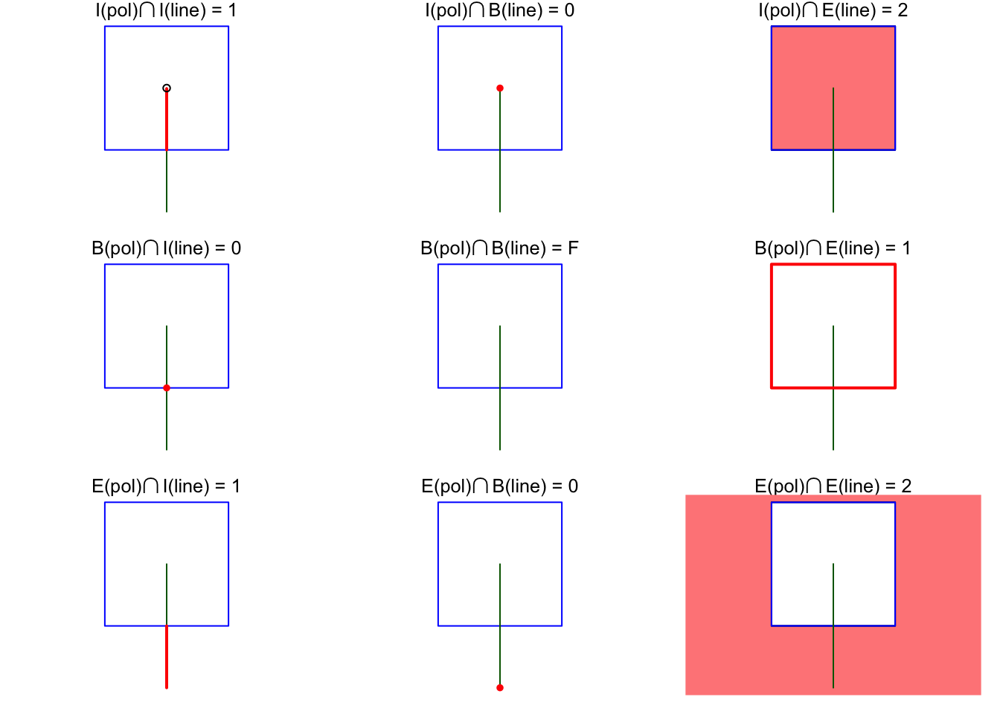

Code
library(sf)Linking to GEOS 3.11.0, GDAL 3.5.3, PROJ 9.1.0; sf_use_s2() is TRUECode
polygon <- po <- st_polygon(list(rbind(c(0,0), c(1,0), c(1,1), c(0,1), c(0,0))))
p0 <- st_polygon(list(rbind(c(-1,-1), c(2,-1), c(2,2), c(-1,2), c(-1,-1))))
line <- li <- st_linestring(rbind(c(.5, -.5), c(.5, 0.5)))
s <- st_sfc(po, li)
par(mfrow = c(3,3))
par(mar = c(1,1,1,1))
# "1020F1102"
# 1: 1
plot(s, col = c(NA, 'darkgreen'), border = 'blue', main = expression(paste("I(pol)",intersect(),"I(line) = 1")))
lines(rbind(c(.5,0), c(.5,.495)), col = 'red', lwd = 2)
points(0.5, 0.5, pch = 1)
# 2: 0
plot(s, col = c(NA, 'darkgreen'), border = 'blue', main = expression(paste("I(pol)",intersect(),"B(line) = 0")))
points(0.5, 0.5, col = 'red', pch = 16)
# 3: 2
plot(s, col = c(NA, 'darkgreen'), border = 'blue', main = expression(paste("I(pol)",intersect(),"E(line) = 2")))
plot(po, col = '#ff8888', add = TRUE)
plot(s, col = c(NA, 'darkgreen'), border = 'blue', add = TRUE)
# 4: 0
plot(s, col = c(NA, 'darkgreen'), border = 'blue', main = expression(paste("B(pol)",intersect(),"I(line) = 0")))
points(.5, 0, col = 'red', pch = 16)
# 5: F
plot(s, col = c(NA, 'darkgreen'), border = 'blue', main = expression(paste("B(pol)",intersect(),"B(line) = F")))
# 6: 1
plot(s, col = c(NA, 'darkgreen'), border = 'blue', main = expression(paste("B(pol)",intersect(),"E(line) = 1")))
plot(po, border = 'red', col = NA, add = TRUE, lwd = 2)
# 7: 1
plot(s, col = c(NA, 'darkgreen'), border = 'blue', main = expression(paste("E(pol)",intersect(),"I(line) = 1")))
lines(rbind(c(.5, -.5), c(.5, 0)), col = 'red', lwd = 2)
# 8: 0
plot(s, col = c(NA, 'darkgreen'), border = 'blue', main = expression(paste("E(pol)",intersect(),"B(line) = 0")))
points(.5, -.5, col = 'red', pch = 16)
# 9: 2
plot(s, col = c(NA, 'darkgreen'), border = 'blue', main = expression(paste("E(pol)",intersect(),"E(line) = 2")))
plot(p0 / po, col = '#ff8888', add = TRUE)
plot(s, col = c(NA, 'darkgreen'), border = 'blue', add = TRUE)